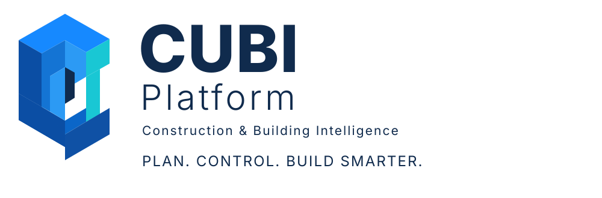

Jalal Foroughi Fard
建筑学 · 工业工程（质量与生产率）
拥有建筑学学士学位及工业工程硕士学位，研究方向为质量与生产率。在石油、天然气、石化、建筑及施工项目中具有项目执行经验，重点关注项目控制。

关于 CUBI
CUBI 汇集建筑、工业工程、软件、电子技术及真实工业环境方面的经验，致力于打造实用的项目控制工具。
建筑学 · 工业工程（质量与生产率）
拥有建筑学学士学位及工业工程硕士学位，研究方向为质量与生产率。在石油、天然气、石化、建筑及施工项目中具有项目执行经验，重点关注项目控制。
信息技术 · 软件
信息技术专业背景，软件方向。在石油、天然气、石化及聚合物企业拥有工作经验，涉及工业与行政系统自动化。
电子工程
曾在油气炼厂、石化综合设施及工业发电厂工作。
团队助理
数学方向高中毕业，协助团队开展相关工作。
本页面仅发布团队提供并确认的职业信息，不暗示任何未经核实的院校、雇主、日期、资质或奖项。
查看平台功能与工作流程。